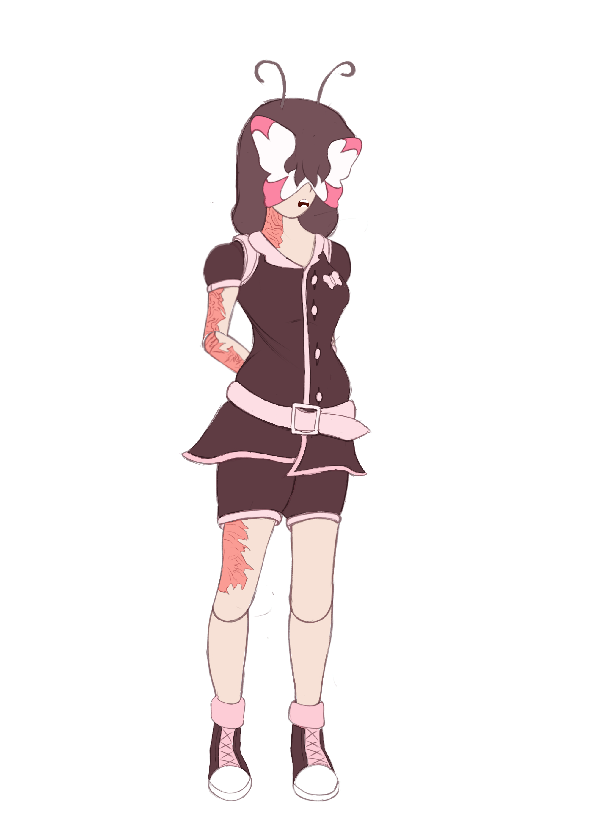

M
MAU
Last contact · 11:51 PM
CASE FILE: 01
The Last Interview
A quiet room. A missing friend. One answer could change everything.
A message came in from Mau
STATION Last known location
INTERVIEW Every answer matters.
Press Space or select Resume to continue.
TODAY · 11:48 PM
Freya sends one last message. No reply comes.
BLACKWOOD POLICE DEPARTMENT
her father

Hello. I'm Officer Riley. I need to ask you a few questions about your missing friend Mau. What was Mau like, and where did you last see her?